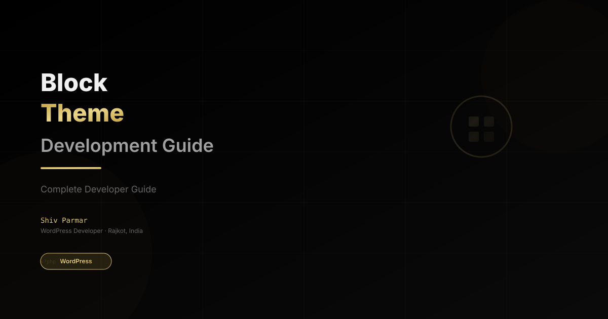

WordPress Block Theme Development Guide
Table of Contents
- Understanding the Architecture of a WordPress Block Theme
- Block Theme File Structure: What Goes Where
- Building a Block Theme with theme.json
- Creating Reusable Block Patterns
- Extending a Block Theme with Custom Blocks
- Global Styles, Style Variations, and Custom CSS
- Common Block Theme Mistakes and Best Practices
- Frequently Asked Questions
Hello everyone! I'm Shiv Parmar, a passionate WordPress developer with global experience. Over the past several years, my daily routine involved slicing custom designs, hooking into PHP template hierarchies, and writing endless lines of custom CSS for classic WordPress themes. But as WordPress evolved with Gutenberg and Full Site Editing (FSE), our approach to theme development changed dramatically.
If you have been holding off on transitioning from classic themes to block themes, now is the ideal time to make the leap. In this guide, I will walk you through the essential architecture, step-by-step development process, and actionable best practices for building a modern WordPress block theme from scratch.
Understanding the Architecture of a WordPress Block Theme
Unlike classic themes that rely heavily on PHP files like header.php, footer.php, and single.php, a block theme moves nearly every layout decision into HTML templates and JSON configuration. A block theme still ships template files, but those templates are assembled from blocks instead of PHP loops, and the global design — colors, typography, spacing — lives in a single theme.json file that both PHP and the Block Editor can read.
That single architectural change has three practical consequences for the way I build sites:
- Templates are markup, not logic. Files such as
index.htmlandsingle.htmlcontain serialized block markup rather than<?php the_content(); ?>calls, which makes layouts easier to audit, diff, and hand off to another developer. - Design tokens are centralized. Colors, font sizes, and spacing scales declared in
theme.jsonappear automatically in the editor UI, so content editors cannot drift away from the brand while they write. - Full Site Editing is built in. Headers, footers, and sidebars become editable template parts, which means site owners can restructure pages without touching a child theme at all.
In practice, the theme developer defines the guardrails once, and nearly everything after that happens visually inside the WordPress editor — no more cloning header.php across twelve templates just to change a navigation menu.
Block Theme File Structure: What Goes Where
The fastest way to understand a block theme is to look at its folder structure. A clean, production-ready block theme I ship to clients usually looks like this:
my-block-theme/
├── style.css # Theme metadata header
├── theme.json # Design tokens and block settings
├── functions.php # Asset loading and theme supports
├── templates/
│ ├── index.html # Required fallback template
│ ├── single.html
│ ├── page.html
│ ├── archive.html
│ └── 404.html
├── parts/
│ ├── header.html
│ └── footer.html
├── patterns/
│ ├── hero.php
│ └── call-to-action.php
└── styles/
└── midnight.json # One-click style variation
Every folder has a single, well-defined responsibility:
templates/holds the full-page block markup that WordPress resolves through its template hierarchy. If a specific template is missing, WordPress falls back toindex.html, so that file is non-negotiable.parts/stores reusable template parts such as headers and footers. Because they are separate files, editors can swap them per template without duplicating markup.patterns/contains block patterns that WordPress auto-registers straight from PHP files — this is where marketing sections like hero banners and pricing tables live.styles/holds style variations that appear in the Site Editor under Styles, letting clients switch an entire color scheme with one click.theme.jsonis the single source of truth for colors, typography, spacing, and block defaults. The editor and the frontend both read from it.
Compare that with a classic theme, where header behavior lives in header.php, widget areas live in sidebar.php, and design rules are scattered across dozens of CSS files. The block theme structure is smaller, far easier to audit, and much simpler to hand over to a client's in-house team.
Building a Block Theme with theme.json
theme.json is where real block theme development begins. Instead of hardcoding colors in a stylesheet and repeating them in the editor, you declare design tokens once and WordPress distributes them everywhere: the block toolbar, the inserter, the Site Editor, and the frontend.
Here is a practical starting point using the WordPress 6.6+ schema:
{
"$schema": "https://schemas.wp.org/trunk/theme.json",
"version": 3,
"settings": {
"appearanceTools": true,
"color": {
"palette": [
{ "slug": "primary", "color": "#c9a84c", "name": "Gold" },
{ "slug": "surface", "color": "#101014", "name": "Surface" },
{ "slug": "text", "color": "#f5f5f7", "name": "Text" }
]
},
"typography": {
"fluid": true,
"fontFamilies": [
{ "slug": "body", "fontFamily": "Inter, sans-serif", "name": "Body" },
{ "slug": "mono", "fontFamily": "JetBrains Mono, monospace", "name": "Mono" }
],
"fontSizes": [
{ "slug": "small", "size": "0.875rem", "name": "Small" },
{ "slug": "large", "size": "clamp(1.5rem, 4vw, 2.25rem)", "name": "Large" }
]
},
"spacing": {
"units": ["px", "rem", "em", "%", "vw"],
"spacingScale": { "steps": 7 }
}
},
"styles": {
"color": {
"background": "var(--wp--preset--color--surface)",
"text": "var(--wp--preset--color--text)"
},
"typography": {
"fontFamily": "var(--wp--preset--font-family--body)",
"lineHeight": "1.7"
}
}
}
Three habits keep this file maintainable as the project grows:
- Reference presets, never raw values. Point colors and fonts at
var(--wp--preset--...)variables so a rebrand becomes a one-line change instead of a find-and-replace across every template. - Turn on
appearanceTools. It unlocks border, spacing, and typography controls for every block, which removes the need for per-block settings JSON. - Upgrade the schema version deliberately. Moving from version 2 to version 3 changes how blocks inherit styles, so test every template on a staging site first — my WordPress staging environment guide documents the exact workflow I use before any theme ships.
Creating Reusable Block Patterns
Block patterns are the closest thing a block theme has to content-level template partials. Files dropped into the patterns/ folder are registered automatically — you do not need a single register_block_pattern() call. The file header comment does all the work:
<?php
/**
* Title: Hero with Call to Action
* Slug: my-block-theme/hero-cta
* Categories: featured, call-to-action
* Viewport Width: 1400
*/
?>
<!-- wp:cover {"overlayColor":"surface","minHeight":420,"align":"wide"} -->
<div class="wp-block-cover alignwide" style="min-height:420px">
<span aria-hidden="true" class="wp-block-cover__background has-surface-background-color"></span>
<div class="wp-block-cover__inner-container">
<!-- wp:heading {"textAlign":"center","level":2} -->
<h2 class="wp-block-heading has-text-align-center">Ship faster with a custom block theme</h2>
<!-- /wp:heading -->
<!-- wp:buttons {"layout":{"type":"flex","justifyContent":"center"}} -->
<div class="wp-block-buttons"></div>
<!-- /wp:buttons -->
</div>
</div>
<!-- /wp:cover -->
Two details matter here. First, the Slug must be globally unique — I namespace every pattern with the theme slug to avoid collisions when plugins ship their own patterns. Second, patterns are content, not layout: keep structural chrome in template parts and reserve patterns for editable sections such as testimonials, feature grids, and calls to action. This separation is exactly how I structure builds for WordPress development services engagements, because it lets clients rearrange landing pages without ever breaking the header or footer.
Extending a Block Theme with Custom Blocks
Most block themes eventually hit a wall when a design needs data core blocks cannot display: a team member card, a membership badge, a dynamic pricing table. That is when you register a custom block instead of nesting thirty columns and groups. My default recipe is a lightweight block with a block.json manifest, a React-based editor script, and a PHP render callback for anything dynamic:
{
"apiVersion": 3,
"name": "my-block-theme/testimonial",
"title": "Testimonial",
"category": "theme",
"attributes": {
"quote": { "type": "string", "source": "html", "selector": "blockquote" },
"author": { "type": "string", "source": "html", "selector": "cite" },
"rating": { "type": "number", "default": 5 }
},
"editorScript": "file:./build/index.js",
"style": "file:./build/style.css",
"render": "file:./render.php"
}
Keep attributes semantic and let WordPress handle serialization, and your block will work in the editor, in patterns, and in the frontend render without duplicate logic. If you want the full workflow — @wordpress/scripts, block variations, and dynamic rendering — I break it down step by step in the Gutenberg block development guide.
Global Styles, Style Variations, and Custom CSS
Global Styles is the engine behind the Site Editor's Styles panel. When a client adjusts a color or swaps a font there, WordPress stores the override in a wp_global_styles custom post type, while your theme.json stays untouched as the default. That separation matters during updates: core styles can be reset without losing the theme's baseline design.
Style variations in the styles/ folder take this further. Each JSON file mirrors the top-level structure of theme.json plus a title, and it appears in the Site Editor as a named preset — "Midnight", "Warm Paper", "High Contrast". Shipping three or four variations is one of the cheapest value-adds you can offer on a project, and it costs zero extra page weight.
For the small percentage of rules JSON genuinely cannot express — a complex clip-path, a niche selector, an animation — fall back to plain CSS in a child theme or the Additional CSS panel, but keep it organized by component rather than dumping it into one blob. I keep a personal checklist for this in how to add custom CSS to WordPress without a plugin, including which method survives a theme update and which does not.
Common Block Theme Mistakes and Best Practices
These are the issues I find most often when clients ask me to audit a block theme another developer built:
- Hardcoding colors inside templates. Literal hex values in block markup defeat the entire preset system and force a manual sweep on every rebrand. Always output
backgroundColorpresets and lettheme.jsonown the palette. - Skipping
index.htmland the archive templates. A theme that only definessingle.htmlandpage.htmlwill render broken fallbacks on search, date archives, and 404s. Build the boring templates first. - Ignoring payload weight. Block markup is verbose; a page with hundreds of blocks inflates the DOM and hurts Interaction to Next Paint. Curate patterns, avoid nesting beyond three levels, and read my INP optimization guide before launch.
- Testing only as an administrator. Editor roles see different toolbars and capabilities. Verify the experience as an Editor or Author — the capabilities that matter for site editing are documented in my notes on WordPress user roles.
- No debugging routine. When a template refuses to load, guessing is expensive. Follow a repeatable process like the one in how to debug WordPress like a pro — template hierarchy checks first, plugin conflicts second.
- Editing the parent theme directly. Always ship a child theme or a custom plugin for project-specific changes, otherwise the first theme update wipes hours of work.
Follow those six rules and your block themes will stay maintainable long after launch, which is the real advantage this architecture offers over classic PHP themes.
Frequently Asked Questions
What is the difference between a block theme and a classic theme?
A classic theme renders pages through PHP templates such as header.php and single.php, with styling defined across CSS files. A block theme replaces those PHP templates with block-based HTML files, centralizes design rules in theme.json, and unlocks Full Site Editing so headers, footers, and templates can be edited visually in the Site Editor.
Do I need to know PHP to build a block theme?
You can build a surprisingly complete block theme with HTML templates, theme.json, and block patterns alone. PHP becomes useful — though never mandatory — when you need dynamic rendering for custom blocks, automated pattern registration, or conditional logic in template parts. In practice, strong CSS skills and an understanding of block markup get you 80% of the way.
Can I convert my existing classic theme into a block theme?
Yes, and WordPress core even ships a wp theme stubs style tooling path plus community converters that translate your existing templates into block markup. The realistic approach is incremental: port the header and footer into template parts first, migrate global colors and fonts into theme.json, then rebuild page templates one at a time while the classic theme keeps serving traffic.
Are block themes faster than classic themes?
They can be, but the architecture alone does not guarantee it. Block themes remove PHP template overhead and often ship less CSS, yet large serialized block markup can bloat the DOM if patterns are nested carelessly. Real speed still comes from disciplined asset loading, image optimization, and caching — the same Core Web Vitals discipline described in my caching plugin comparison.
How do I add custom CSS to a block theme?
Three reliable options exist: a child theme stylesheet that enqueues after theme styles, the Site Editor's Additional CSS feature for small overrides, or a small plugin for site-wide rules that must survive theme switches. For step-by-step instructions and trade-offs of each approach, see how to add custom CSS to WordPress without a plugin.